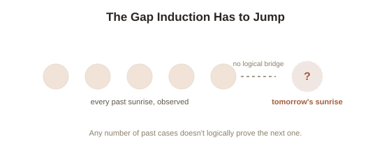

Chapter 5: The Problem of Induction
Every source of knowledge covered so far — perception, reliable processes, testimony — shares one silent assumption underneath it: that patterns observed in the past give you real, justified grounds to expect them to continue. The sun rose yesterday and every day before that, so you expect it tomorrow. Bread has nourished you before, so you expect it will again. This feels like the most obviously safe inference a mind can make. Philosopher David Hume, in the 1730s, argued it's actually the least justified inference of all — and nobody has ever fully answered him.
Hume's challenge: past regularity can't logically guarantee future regularity
Induction (reasoning from observed past cases to a general conclusion about unobserved or future cases — the basic engine behind essentially all scientific and everyday prediction) feels self-evidently reasonable, which is exactly why Hume's attack on it is so unsettling. His argument, stated precisely: any justification for trusting induction has to be either a matter of pure logic, or a matter of experience. It can't be pure logic — there's no contradiction in imagining the sun failing to rise tomorrow, the way there's a contradiction in imagining a four-sided triangle, so induction isn't logically guaranteed the way mathematical truths are. That leaves experience: you might try to justify induction by pointing out that it's worked reliably in the past. But that justification only works if you already trust that past reliability predicts future reliability — which is itself an inductive inference, assuming exactly the thing being justified. You can't use induction to prove induction works without circularity. This is now called the problem of induction, and Hume's own conclusion was genuinely radical: our confidence in induction isn't ultimately based on reason at all — it's a deeply ingrained psychological habit, one so useful and automatic that no one, including Hume himself, could actually live as though it weren't true, even while accepting that it can't be rationally proven.

Popper's attempted end-run — and why it doesn't fully escape
Karl Popper, whose falsificationism was covered in this library's Philosophy of Science topic, proposed a genuinely clever dodge: science, he argued, doesn't actually need induction at all. A scientist doesn't need to prove a theory true by accumulating confirming instances (which is the inductive move Hume attacked) — they only need to propose bold theories and try to falsify them, and falsification is pure deductive logic (one clean counterexample disproves a general claim, with no inductive leap required). This is elegant, but critics have pointed out it doesn't fully dissolve the problem, only relocates it: deciding to act on a theory that has merely survived falsification so far — rather than one that's failed — still implicitly assumes that a theory's past success at resisting falsification says something meaningful about its future reliability, which is exactly the inductive assumption Popper was trying to avoid needing.
Goodman's twist: even the shape of the pattern is a live question
Philosopher Nelson Goodman sharpened the problem further in 1955 with a deliberately strange thought experiment. Define a new predicate, "grue": something is grue if it's green and observed before some future date T, or blue and observed after T. Every emerald ever observed so far is consistent with both "all emeralds are green" and "all emeralds are grue" — the evidence is identical either way, since no observation has happened after T yet. Standard induction says we should predict future emeralds will be green. But by exactly the same inductive logic applied to "grue" instead of "green," you'd predict they'll turn blue after date T. Nothing in the raw data prefers one prediction over the other — you need some extra assumption about which properties are the "natural," projectable ones, and Hume's original problem never told you where that assumption is supposed to come from either.
Living with an unsolved problem
Nobody treats the problem of induction as a reason to stop trusting the sun will rise tomorrow — including Hume, who conceded that this kind of instinctive, practical trust is unavoidable and, in a sense, useful precisely because it isn't first cleared through reason. What the problem actually delivers is calibration, not paralysis: a reminder that even the library's most basic sources of justification — Chapter 1's perception, Chapter 3's reliable processes, Chapter 4's testimony — all quietly lean on an inductive assumption that has never been, and arguably can't be, proven from the ground up. That's not a reason to distrust everything. It's a reason to hold even your most confident, well-supported beliefs with a small, permanent asterisk.
Try this
Ideas for noticing or testing this in your own life.
- Try to actually justify your confidence that tomorrow will resemble today, without smuggling in another inductive assumption anywhere in the argument — most people find this genuinely difficult to do cleanly, which is Hume's whole point.
- Invent your own "grue"-style predicate for something in your own life — a habit, a relationship pattern, a market trend — and notice how the same past evidence could support two very different future predictions, depending on an assumption you hadn't been aware of making.
Worth pulling on?
A few loose threads from this chapter — if any of these genuinely grab you, that's a good sign of where to go next.
- This closes the loop back to where the topic started: Chapter 1 asked what separates knowledge from lucky true belief, and five chapters later, even the mechanism most people would point to as knowledge's most basic engine — expecting the future to resemble the past — turns out to rest on an assumption nobody has fully proven.
- Popper's falsificationism, invoked here as a partial escape from induction, is covered in far more depth as its own topic. → Already in the library: Philosophy of Science covers Popper's full framework and Kuhn's response to it.